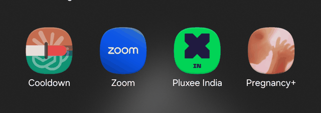

CCRM-60 (Dual Identity) · launcher icon, round 8 · 2026-09-10 · twelve concepts, no recommendation
Today's tile, the round-7 winner approved on 2026-09-09 and built, is a horizontal tricolour. Saffron-ish terracotta across the top third, a cream band across the middle, green across the bottom third — and centred on the cream band, the faint half-sunburst, whose radial spokes sit exactly where the Ashoka Chakra sits. Every ingredient of the Indian flag is present in the right order and the right place, and once a viewer has seen it they cannot unsee it. The individual decisions were all defensible: terracotta above green because Claude is the primary account, a light bar at the seam because the bar is the app's own geometry, half-marks faint because the marks identify the services. Together they made a flag. So the split, the band and the wheel are all back on the table.
Everything below is judged against one rule set, applied identically to all twelve.
108 × 108 viewport, foreground and background
layers. Only the central 72 units are ever visible and all essential content sits
inside the 66-unit safe circle (centre 54,54, r 33). The
112 px view below draws both guides.#FF5252; the idea that the
user is spending faster than even pace is the app's one alarming state and the icon should
admit it exists.Same five views as every concept below, so the comparison is like for like. Note how the circle mask, which crops the corners, strengthens the flag reading rather than weakening it: it trims the fields to three clean bands with the wheel in the middle.
The three bands. Terracotta #D97757 over y 0–54,
green #10A37F over y 54–108, and a 16-unit cream capsule spanning
x 10–98 straight across the seam. Cropped to the visible 72 units the cream bar is
roughly a fifth of the height, centred — a middle band in all but name.
The wheel. The Claude sunburst's upper half is centred on
54,54 at 60 units tall, so its spokes radiate from behind the middle of the cream
band. That is the chakra's position and, at 48 dp, roughly its apparent texture.
Verdict already reached. Not shippable as an identity, so round 8 exists. Nothing else about CCRM-60 (Dual Identity) is reopened — the two rooms, the four-tab Settings and the two-account notification all stand.
Each concept is drawn once and rendered five ways from the same 108-unit source, so the themed layer really is the same geometry with colour removed — where two shapes collapse into one tone there, that is a genuine finding and not a drawing shortcut. Read the 48 dp views first; the 112 px view is for checking the safe circle, not for judging the icon.
Idea. The product itself as the mark: two stepped usage lines climbing a charcoal plate, with the dashed even-pace diagonal cutting across them and the run above it turning red.
What the shapes mean. Terracotta staircase = the Claude account's spend over the window; green staircase = the ChatGPT account's; dashed cream diagonal = even pace; the red run = the terracotta line past the pace line; the plate = the app's charcoal surface.
Pros. Says what the app does with no metaphor at all, and it is the only concept whose silhouette is unique to this app. The steps are literally the bar segments the app already draws. Reads as a category-mate of Stocks and Analytics without copying either, because no other analytics icon carries a pace diagonal.
Cons. Four strokes in a 66-unit circle is the busiest thing here. At 48 dp the green line and the dashed diagonal both come close to reading as texture rather than lines, and the stepped corners round off.
Flag / trademark check. No bands, no field of colour, no wheel — nothing flag-like. No provider mark, so no trademark exposure at all: the two colours alone carry the identification, exactly as CCRM-56 (Provider Identity) allows on the launcher tile.
Over pace. Explicit and central: the terracotta line crosses the pace diagonal and everything past the crossing is red. This is the only concept where over-pace is the composition rather than a garnish.
Idea. Newton's law of cooling as one bold stroke: a steep decay from the top-left that settles onto a flat line at the right, terracotta on the fall and green on the flat, with a red dot on the steep part.
What the shapes mean. The curve = a window draining and then resetting — the app's whole subject in one gesture; terracotta the first half and green the second = the two accounts sharing one curve; the red dot = the moment spend went faster than even pace.
Pros. Strongest silhouette of the twelve and the only one that says the app's name out loud. Survives to 24 dp. One shape, three colours, nothing to crop.
Cons. It does not say two providers — the colour change reads as a gradient-by-halves, not as two accounts, and a viewer who does not know the palette sees one curve. The red dot has to be big enough to see and then it competes with the curve.
Flag / trademark check. Nothing flag-like. No mark, no trademark exposure. Closest neighbour in the wild is a generic “temperature” or “performance” icon, which is a crowding risk rather than a legal one.
Over pace. The red knee dot. Weakest over-pace statement here: it is a garnish, not a structure, and at 48 dp it can read as a bullet or a defect marker.
Idea. The word “window” taken literally: a cream window frame with two panes, each filled from the bottom to its own level, the right one already past its tick.
What the shapes mean. The frame = a usage window; left pane at 40 % = the Claude account; right pane at 70 % = the ChatGPT account; the cream tick across the right pane = even pace; the red cap above it = the amount spent past pace.
Pros. The only concept that draws the app's actual noun. Two panes is an unmistakable “two of something”. Both fills, the tick and the red cap are the same geometry the app's bars already use, so the icon and the app agree.
Cons. A cream frame plus a cream mullion is a lot of light structure — it eats the colour area, and the two fills end up small. At 48 dp the 2-unit tick line is at the edge of visibility, and the frame's stroke thins under a circle mask.
Flag / trademark check. Not a flag: the light structure is a cross, not a band, and there is no third field. Closest confusion is a generic “window” or spreadsheet icon. No mark, no trademark exposure.
Over pace. Structural: the red cap sits above the cream tick in the right pane, so the icon permanently shows one account under pace and one over it — the app's two states side by side.
Idea. Two filled discs overlapping, terracotta and green, the lens between them cream; a short red arc on the rim of the green disc.
What the shapes mean. Two discs = two accounts; the cream lens = the one place they are added together, which is the app's combined view; the red rim arc = the slice of the green account's window spent past even pace.
Pros. The clearest “two” of the twelve and the strongest silhouette after the cooling curve. Fills the safe circle edge to edge, so a circle mask costs nothing. Trivially legible at 24 dp.
Cons. It is Mastercard's composition, and after Mastercard it is every “merge”, “sync” and “VPN” icon on the store. It says nothing about time, windows or usage. The red arc is the only product content and it is small.
Flag / trademark check. Not a flag. Trademark exposure is the interesting one here: no provider mark, but two overlapping brand-coloured discs in terracotta and green is close enough to a payments mark to invite a second look — the risk is confusion with Mastercard, not with Anthropic or OpenAI.
Over pace. The red rim arc on the green disc. Weak: it is a decoration on the edge, and a circle mask sits right on top of it.
Idea. Two upright rounded bars, bottom-aligned in their own tracks, filled to different heights — a pause glyph that happens to be two meters.
What the shapes mean. Left bar at 55 % = the Claude account's window; right bar at 80 % = the ChatGPT account's; each cream line = that account's even-pace tick; the red above the right tick = spend past pace. The pause reading is the pun: a cooldown is a pause.
Pros. Two meters and a pause glyph in one shape, which is a rare double reading that both happen to be true. Very strong silhouette, survives to 24 dp, and the mono layer keeps the two heights.
Cons. Pause is an overloaded glyph — on a launcher it invites a tap expecting media. The two heights are the only thing distinguishing it from an actual pause button, and a launcher's rounded mask crops the bar tops slightly.
Flag / trademark check. Not a flag: vertical, but two fields with a dark gap, no light band, no third colour. No mark, no trademark exposure. Not the dropped “two bars”: the dropped pair were horizontal progress bars stacked on a plain ground, reading as a list row; these are vertical, bottom-filled, in tracks, and the pair forms one recognisable glyph rather than two rows of a list.
Over pace. Structural and legible: the right bar's fill runs past its cream tick and that overshoot is red, at meter scale rather than dot scale.
Idea. Two speech bubbles overlapping, terracotta behind at the upper-left and green in front at the lower-right, with a red dot in the front bubble.
What the shapes mean. Two bubbles = two assistant conversations, which is what the accounts are; the overlap and the knock-out outline = they are separate accounts, not one; the red dot = an account over pace, borrowed from the unread-badge idiom.
Pros. Instantly legible as the AI-assistant category, so it sits naturally beside Claude and ChatGPT in the drawer. Excellent silhouette, excellent mono, no cropping problems.
Cons. It looks like a chat app, and Cooldown is not one — it never shows a message. Nothing in it says usage, window, budget or pace. Also the most generic composition of the twelve: two bubbles is the single most used icon in the category.
Flag / trademark check. Not a flag. No mark, so no trademark exposure — but the strongest brand-confusion risk here, because a bubble pair in green next to the real ChatGPT icon reads as an unofficial ChatGPT client.
Over pace. A red badge dot only. The weakest over-pace of the twelve: it carries no magnitude and reads as “you have a notification”.
Idea. No colour fields at all: the top half of the Claude sunburst in terracotta above a hairline seam, the bottom half of the OpenAI blossom in green below it, both at full strength on charcoal.
What the shapes mean. Each half-mark = the service it belongs to, unambiguously; the shared centre line = the app is one surface over both; the small red pip above the seam = an account over pace.
Pros. Zero ambiguity about what the app tracks — it names both services with their own marks. Removing today's cream capsule removes the light band that is doing most of the flag work. Two colours on a dark plate, clean at 48 dp.
Cons. Two half-glyphs of two different marks do not fuse into one shape; they read as two fragments stacked. The sunburst's spokes are exactly the wheel-like detail that got today's tile into trouble, so this keeps the riskiest element and only removes the band around it.
Flag / trademark check. No bands, so no flag — but the wheel association survives on its own in the upper half. Trademark, plainly: this puts two other companies' registered marks on the launcher icon of a third-party app. That is the one place a mark is most likely to be read as endorsement or as an official client, it is the case both brand guidelines call out, and it is the reason CCRM-56 (Provider Identity) already kept marks off the launcher tile. Shipping this would reverse that decision knowingly.
Over pace. A small red pip above the seam. Vestigial — there is no room for a meter once both marks are at full strength.
Idea. Today's tile rotated 90°: terracotta on the left, green on the right, a hairline charcoal seam between them, and the bar crossing horizontally at the centre on a charcoal track instead of as a cream band.
What the shapes mean. Left and right fields = the two accounts as equals rather than one above the other; the charcoal track = the bar's ground, so the bar no longer spans as a light band; the cream fill and its red run past the ink tick = spend and over-pace, at the app's own bar geometry.
Pros. The smallest possible change from an approved, already-built tile: same palette, same bar, same numbers, and the About screen's drawable follows for free. Vertical division also makes the two accounts read as peers, which matches the two-room model of CCRM-60 (Dual Identity).
Cons. A vertical bicolour is still a bicolour, and the horizontal bar reintroduces a light element across the middle. It solves the specific flag while staying in the family of designs that produced it. The two flat fields also make the tile feel like a settings swatch rather than a mark.
Flag / trademark check. Better, not clear. A vertical two-colour split is not any of the flags checked, since every one of those is a tricolour with a light band (India, Ireland, Italy, Hungary, Niger, Ivory Coast, Mexico). But terracotta-and-green side by side, with a light bar through the middle, is one design revision away from Ivory Coast/Ireland territory, and the cream fill is that revision. No mark, no trademark exposure.
Over pace. Full strength: the app's own bar, with the fill running past an ink tick and the overshoot in red. Identical semantics to the shipped bar.
Idea. A monitoring trace across the plate: a small terracotta beat on the left, a green beat on the right, and one red spike in the middle that breaks a dashed cream ceiling.
What the shapes mean. The trace = continuous monitoring, which is what the foreground service does; terracotta run and green run = the two accounts on one trace; the dashed cream line = the even-pace ceiling; the red spike above it = spending faster than pace.
Pros. Immediately legible as “this app watches something for you”. The one spike gives the icon a focal point and a memorable silhouette. Mono works well because the ceiling and the spike differ by shape, not colour.
Cons. Heartbeat is a health-app cliché, and a spike says “event” rather than “budget” — the app tracks a level over a window, not an incident. The two provider runs are short and, at 48 dp, read as one line changing colour.
Flag / trademark check. Not a flag. No mark, no trademark exposure. Category collision with health, uptime and network monitors is the real cost.
Over pace. Strong and central: the spike is red exactly and only where it exceeds the dashed ceiling, which is a fair picture of the app's rule.
Idea. A cool-toned plate that belongs to the app rather than to either provider: a wide cream bar with its red tail above two small terracotta and green chips.
What the shapes mean. The slate ground = Cooldown's own colour, neither provider's; the wide bar with its ink tick and red tail = the window and the over-pace run; the two chips = the two accounts, present but subordinate.
Pros. The cleanest fix for the flag problem, because it removes the two-field ground entirely — the provider colours become small accents on a neutral. The bar is big enough to read at 48 dp and matches the app's bar exactly. The slate also gives the brand a third colour it currently lacks.
Cons. Introduces a new brand colour that appears nowhere else in the app yet, so either the icon is an outlier or CCRM-60 (Dual Identity) grows a palette change. The chips are small — at 48 dp they are two coloured dots, which is close to the “dots, not logos” idea already rejected for in-app surfaces.
Flag / trademark check. Not a flag, and the furthest from one of the twelve: a cool ground with one light bar and two small chips matches no national arrangement. No mark, no trademark exposure.
Over pace. Full strength on the main element: the wide bar shows fill, ink tick and red tail at the app's own proportions.
Idea. A cream shield on charcoal, its interior split by a downward chevron — terracotta above, green below — with a red wedge at the chevron's point.
What the shapes mean. The shield = the app watching the limit on your behalf; the chevron = the split between the two accounts, angled so neither is simply “on top”; the red wedge = the over-pace warning at the point where the two meet.
Pros. Strong, closed, instantly recognisable silhouette that masks beautifully to a circle or a squircle. The chevron gives the bicolour a diagonal energy the horizontal split never had, and the point gives the red somewhere logical to live.
Cons. A shield says security — antivirus, VPN, password manager, parental controls. Cooldown does none of that, and an icon that promises protection and delivers a usage meter is a misread that lasts past the install. The shield also spends a lot of area on cream, which is the element implicated in the flag reading. And it is the worst mono layer of the twelve: because every element sits inside the silhouette with no ground showing between them, the themed render collapses to one flat shield — the chevron, both colours and the red notch all disappear. Check the fifth view above; that is not a drawing error.
Flag / trademark check. Not a flag, since the colour is inside a contained silhouette rather than banded across the tile. No mark, no trademark exposure. The misleading-category risk is the real objection, not the flag.
Over pace. The red wedge at the chevron point. Symbolic rather than quantitative — it marks “over” but shows no amount.
Idea. Two rounded cards offset on the diagonal, terracotta behind at the upper-left and green in front at the lower-right, the front card carrying a short cream bar with a red tail.
What the shapes mean. Two cards = the two account cards the app's rooms already show; the offset = a stack you can flip through, which is the two-room navigation; the bar on the front card = that account's window, with the red past its tick.
Pros. It is a picture of the app's own home screen, so the icon and the first screen agree. “Two accounts, one wallet” is a familiar and correct reading. Excellent mono, no crop problems, and a strong diagonal silhouette.
Cons. Card stacks are wallet, banking and password-manager iconography, so the category read is money rather than usage. The back card contributes only a corner of colour, so the terracotta is a sliver — the two providers are not equal here, which is exactly what CCRM-60 (Dual Identity) is trying to avoid.
Flag / trademark check. Not a flag. No mark, no trademark exposure. Against the dropped “interlocking tabs”: those were two shapes notched into each other on one plane, reading as a puzzle or a merge; these are two whole, separate cards stacked in depth, and the front one carries real product content (a bar with a tick and a red tail) rather than being a bare colour field.
Over pace. On the front card only: a real bar with fill, tick and red tail, at small scale. Honest but half the story, since the back card's account shows no state.
Descriptive only — no winner is picked here. "Distinct at 48 dp" asks whether the silhouette is recognisable and unlike its neighbours in a drawer, not merely whether it is visible. "Survives mono" asks whether the concept still says the same thing once Android strips the colour.
| Concept | Reads as a flag? | Distinct at 48 dp | Survives mono | Says "two providers" | Says "over pace" | Trademark exposure | Notes |
|---|---|---|---|---|---|---|---|
| 1. Trend tile | no | so-so | so-so | yes | yes | none | Only concept whose silhouette is unique to this app; also the busiest. Green line is the first thing to lose. |
| 2. Cooling curve | no | yes | yes | no | token | none | Best silhouette, says the app's name; says nothing about two accounts. |
| 3. Two panes | no | so-so | so-so | yes | yes | none | Draws the app's actual noun. Cream frame plus mullion is a lot of light structure. |
| 4. Venn | no | yes | yes | yes | barely | Mastercard-adjacent | Clearest 'two'; says nothing about time or usage; composition is heavily used. |
| 5. Pause pair | no | yes | yes | yes | yes | none | Double reading (pause + two meters) that is true both ways; pause glyph invites a media expectation. |
| 6. Two bubbles | no | yes | yes | yes | barely | reads as an unofficial client | Right category, wrong product: nothing says usage or window. |
| 7. Fused mark | no | so-so | no | yes | barely | high — two live marks on the launcher | Keeps the wheel-ish sunburst that started this; reverses CCRM-56 (Provider Identity) on the launcher. |
| 8. Portrait seam | nearly | yes | so-so | yes | yes | none | Smallest delta from the built tile; still a bicolour field with a light bar through it. |
| 9. Pulse | no | so-so | yes | weakly | yes | none | Says 'monitoring' well; heartbeat cliché, and 'spike' is the wrong mental model for a budget. |
| 10. Ice plate | no | so-so | so-so | weakly | yes | none | Furthest from a flag; costs a new brand colour and shrinks the providers to chips. |
| 11. Chevron shield | no | yes | no | yes | token | none | Beautiful silhouette, wrong promise — shield reads as security software. Themed layer collapses to one flat shield: no split, no red. |
| 12. Stacked cards | no | yes | yes | weakly | token | none | Mirrors the app's own cards; wallet/banking category read, and the two accounts are not equals. |
Answered on 2026-09-10 — by picking 9 outright.
Robin chose concept 9, Pulse from the twelve rather than answering the four questions below, so
questions 1–4 are moot for round 8 and are kept only as the record of what round 8 asked.
The choice settles them implicitly: abstract launcher, no provider marks (question 1); the charcoal
plate #1F1B19 (question 2); a real meter with a pace ceiling and a red run over it,
not a symbol (question 3); and one concept to round 9, not two (question 4). Round 9 is below.
1. Marks or abstract? Concept 7 is the only one that puts the Claude sunburst and the OpenAI blossom on the launcher, and it carries a real trademark cost and reverses CCRM-56 (Provider Identity) for that surface. Every other concept identifies the two services by colour alone. Do we keep the launcher abstract — in which case 7 is out now and the round narrows to eleven — or is a marked launcher back in scope?
2. Charcoal plate, or a cool ground of our own?
Ten concepts sit on the app's charcoal #1F1B19; concept 10 introduces a cool slate
#22303C that belongs to Cooldown rather than to either provider, and concept 8 keeps
the two provider colours as the ground itself. This choice decides how much of the tile the provider
colours own, and whether CCRM-60 (Dual Identity) also adds a brand colour. Charcoal, slate, or
provider fields?
3. Must the icon draw the product, or may it be a symbol? Concepts 1, 3, 5, 9, 10 and 12 all contain a real meter with a pace tick and a red run; concepts 2, 4, 6 and 11 are symbols with a token of red. The first group is truer and busier, the second is stronger at 24 dp and quieter about what the app does. Which failure would we rather have — an icon that is hard to read, or an icon that is easy to read and says the wrong thing?
4. Which two go to round 9? Round 9 should be two concepts at full fidelity — drawer, taskbar, About screen, themed layer, and a side-by-side against the real Claude and ChatGPT icons on a home screen — rather than twelve at sketch fidelity. Name two, and name what changes about each before they are redrawn.
Nothing here is approved and nothing here is built. Per working agreement 2, implementation starts only after an explicit approval of a specific wireframe; the answers to the four questions above become round 9, not code.
CCRM-60 (Dual Identity) · launcher icon, round 9 · 2026-09-10 · concept 9 chosen, six ways to draw it
Robin reviewed the twelve above on 2026-09-10 and chose concept 9, Pulse, outright. His instruction, verbatim: “Go with Option 9: Pulse, just make that icon bigger by removing padding from all 4 sides (show me 3 variations of the size and another 3 variations by the type of pulse if possible)”. So round 9 is not a shortlist — the concept is settled and the only open questions are how big and which shape of pulse.
Two groups, seven tiles. Group A holds the trace shape fixed and removes padding
progressively, so the three tiles differ only in how much of the 108-unit layer the trace occupies
and how thick it is. Group B holds the size fixed at A2's and changes the kind of
pulse. Every tile keeps the three colour roles — terracotta #D97757 for the Claude
account, green #10A37F for the ChatGPT one, red #FF5252 for the run past
pace — on the charcoal plate #1F1B19, with the cream #F3EBE3 dashed
ceiling as the even-pace line. Flat strokes only, no gradients and no filters, round caps and joins
throughout.
One change from round 8's sketch of concept 9, and it is worth naming: there, the red
polyline carried the flat runs on either side of the spike, so charcoal-level flat line was drawn red.
Here red is only ever the beat — in A1–A3 and B1–B2 the spike or plateau
itself, and in B3 and B4 exactly the ink above the ceiling, clipped to
y < 44. That makes the icon's colour rule the same rule the bars in the app
use.
Each tile is shown in round 8's five views plus a sixth that is the point of this round: a
home-screen strip — the tile at 48 dp on a dark wallpaper, under the same squircle
mask, sitting between stand-ins for the two real app icons it will actually live beside. The
neighbours are drawn from the app's own ic_provider_claude.xml and
ic_provider_chatgpt.xml pathData, on terracotta and on black, with their marks at about
58 % of the visible 72 units, which is roughly where the shipped tiles put them. Labels are at
launcher label size. The question that strip answers is not “is this pretty” but
“does this hold its own between those two without imitating either”.
Group A — size
Same ECG-style trace in all three: a small terracotta beat on the left, a green beat on the right, one tall red spike breaking the dashed cream ceiling, on the charcoal plate. Only the span, the stroke and the baseline move.
Trace span x 21 → 87 (66 units, the safe-circle width). Stroke 7, round caps and joins. Baseline y 62, apex y 30, dashed ceiling y 44 over x 23 → 85, stroke 3, dash 6 5. Beat centred on x 54.
Idea. Round 8's concept 9 with the padding taken down to the safe circle and nothing more — the conservative end of the size range, kept so there is something to compare the bolder two against.
What crops. Nothing structural, on any mask. The two end caps reach a radius of about 36.5 from centre, so a circle mask shaves a sliver under half a unit off each cap tip — well under a pixel at 48 dp. The apex sits 24 units from centre and the ceiling's own ends sit 32.6, both inside the 66-unit safe circle.
Reads. Clean, but it still reads as a picture of a trace on a plate rather than as a mark: there is a visible ring of empty charcoal all the way round, which is exactly the padding Robin asked to lose. The two provider bumps are the smallest of the three sizes and are the first thing to go at 24 dp.
Mono. Holds. Ceiling dashed at 0.72 alpha, trace solid; terracotta run at 0.82 and green at 0.46, so the two accounts still differ by tone as well as by bump height, and the red apex is the only full-alpha ink.
Trace span x 12 → 96, of which the visible 72 units (x 18 → 90) are all trace — the flat runs carry on 6 units past the visible edge on both sides. Stroke 8. Baseline y 62, apex y 29, ceiling y 44 over the same x 12 → 96, stroke 3.5, dash 7 5.5.
Idea. Padding removed on the left and right only. Because the line and the ceiling both run off the layer, every mask cuts them at its own edge, and the cut reads as a trace that continues rather than as a drawing that stopped. The spike stays inside the safe circle vertically, so the focal shape is never at risk.
What crops. The circle mask cuts the baseline where the circle leaves it, at about x 20 and x 88, and cuts the ceiling at about x 19 and x 89. The squircle cuts both a little further out; the rounded square cuts them at x 18 and x 90. All three cuts are on flat line, never on a bump or the apex — which is the whole design of this size.
Reads. Noticeably more present than A1 at the same 48 dp: the ink now touches the mask on both sides, so the tile reads as a mark and not as a framed illustration. The trade is that the leading and trailing flats lose their round caps, so the trace has no visible start or end.
Mono. Same as A1, one grade stronger because the ink area is larger. The bleed helps here — a themed tile is one flat tint, and a shape that reaches the mask edge survives that flattening better than a shape floating in the middle.
Trace span x 0 → 108, the whole layer. Stroke 9. Baseline dropped to y 60 (6 below centre) to give the beat room; apex y 21 and trough y 87, which are the top and bottom of the 66-unit safe circle. Ceiling y 42 over x 0 → 108, stroke 4, dash 8 6.
Idea. The boldest reading available: nothing anywhere is padding, and the beat is deepened with a trough below the baseline because at this stroke a single up-spike leaves the bottom half of the tile empty. This is the one size where the icon is a single gesture rather than a scene.
What crops, plainly. Circle mask: both flat runs are cut where the circle leaves them, at about x 20 and x 88; the apex cap loses about 1.5 units off its tip (the circle's edge sits at y 18 at x 54 and the apex ink reaches y 16.5); the trough cap loses about 3.5 units the same way; and the green bump is reduced to a rising sliver at the right edge — its peak at x 88 sits right on the mask and its return to baseline is gone entirely, so at 48 dp the green account is a crescent, not a beat. Squircle: the same cuts, each about 2 units further out, so the green bump reads a little more complete. Rounded square: flats cut at x 18 and x 90, apex and trough both fully inside. So the circle is the worst case and it costs the green account's bump, not the red spike.
Cost. Two real ones. First, at stroke 9 the spike's rising and falling limbs merge above about y 45, so the top third of the beat reads as a solid red wedge rather than as a line — sharp, but closer to an arrow than to a trace. Second, the beat eats so much width that the two provider bumps are pushed to x 29 and x 88, right onto the masks, which is the opposite of what the two-account reading needs.
Mono. Strongest of the three by ink area, weakest by meaning: the green bump is the piece the mask takes, and green is already the faintest tone at 0.46 alpha, so the themed tile can end up looking like one account rather than two.
Group B — type of pulse
All four are drawn at A2's size — span x 12 → 96, stroke 8 — because A2 is the size that actually answers the instruction (no padding on any side, the line cut by the mask rather than floating inside it) without asking the apex or the trough to fight the circle mask the way A3 does. B4 is the optional fourth; it works at 48 dp, with a caveat stated on its tile.
A2's size and stroke (span x 12 → 96, stroke 8, baseline y 62, ceiling y 44). Classic P–QRS–T: terracotta P bump peaking y 52; a red Q dip to y 68, R apex y 28, S dip to y 70; green T bump peaking y 52.
Idea. The medical shape, drawn properly — the dips before and after the spike are what make an ECG read as an ECG rather than as a chart with one tall bar. Sharpest of the three types and the one with the most recognisable rhythm.
What crops. As A2: flat runs and ceiling cut at the mask edge, bumps and beat untouched. The S dip bottoms at y 70, ink to y 74, comfortably inside the circle at that x.
Reads. Unmistakable at 48 dp, and the dips give the tile an asymmetry that helps it stand out in a drawer. The cost is the one round 8 already named: this is a health-app silhouette, and it says incident where the app means level over a window. It also sits in the same visual family as every uptime and network monitor on the store.
Mono. Best of the three. The dips survive flattening because they are shape, not colour, and the ceiling stays legible as the only dashed thing on the tile.
A2's size and stroke, baseline dropped to y 64 to make room. Flat terracotta run x 12 → 44; a red right-angled climb at x 44 to a plateau at y 34, ten units clear above the ceiling, running to x 64; a green right-angled drop at x 64 back to the baseline and out to x 96. Round joins put a 4-unit radius on each corner.
Idea. The same trace, drawn the way the app itself draws usage — stepped, not smooth. It swaps the heartbeat reading for a digital one: a signal that went high and stayed high, which is much closer to what a usage window actually does than a single beat is. The descending edge is green on purpose: the second account is the one coming back down, which is the app's name.
What crops. As A2: the two flats and the ceiling are cut at the mask edge. The plateau's ink top is y 30, 24 units from centre — nothing near any mask. This is the safest of all six for cropping because the only thing at the edges is flat line.
Reads. Boldest silhouette here after A3, and the only one of the three types that does not borrow a medical or scientific cliché. It matches the app's stepped usage line and the bar segments the cards already draw, so the icon and the app agree. The risk is the opposite of B1's: a plateau is a calm shape, and a viewer may read it as a level rather than as an alarm.
Mono. Holds well, and it is the clearest case of alpha doing the work: terracotta run at 0.82, plateau at full, green drop at 0.46, so the themed tile still shows a rise, a peak and a fall in three grades. Ceiling dashed against three solid runs.
A2's size, stroke 8, baseline y 66. One continuous cubic — M12,66 H30 C42,66 42,30 54,30 C66,30 66,66 78,66 H96 — drawn three times and split by clip, so the joins are exact: terracotta for x < 54, green for x ≥ 54, and red for y < 44, which puts red exactly and only where the trace is above the ceiling — about x 43.6 → 64.4. Crest y 30, ceiling y 44.
Idea. The calmest of the three, and the only one whose colour rule is the app's rule rather than an approximation of it: because red is clipped to the region above the ceiling, the red ink is literally the overshoot. Terracotta rises, green falls, and the crest between them is the moment the pace line was crossed.
What crops. The circle mask cuts the flat runs at about x 22 and x 86 — earlier than in A2, because the baseline sits 12 units below centre here rather than 8. Crest and both limbs are untouched. Squircle and rounded square cut further out, as usual.
Reads. Most on-message of the six — a wave says cooldown, and the smooth fall on the green side says recovery. It is also the weakest at saying alarm: a rounded crest that happens to be red is a much softer statement than a spike, and at 48 dp the red band is the only thing separating this from a generic wave or audio icon.
Mono. Weakest of the three, and worth looking at closely. Colour is what makes the two halves read as two accounts; once flattened, the tone step from 0.82 to 0.46 lands mid-curve with nothing structural to mark it, so the wave can read as one stroke that fades. The ceiling and the crest still differ by shape.
A2's size and stroke. Terracotta bump peaking y 47 — 3 units under the ceiling, so it stays below pace; green spike peaking y 30, well over it. The red is the green spike redrawn and clipped to y < 44, so red is exactly the part above the ceiling (about x 62 → 70). Peaks at x 39 and x 66, whose midpoint is x 52.5, so the pair is centred.
Idea. The one variant that draws two accounts in two different states rather than two colours on one trace: one beat under the pace line, one over it and red where it is over. It is the same picture the notification draws — one account fine, one account over — and no other tile in either round says that.
What crops. As A2, flats and ceiling only. Both peaks sit inside the safe circle (the terracotta bump 17 units from centre, the green apex 25).
Does it hold at 48 dp? Yes, just. The bump limbs are 9 units of run for 15 of rise, which at stroke 8 leaves about 8.4 units between the limb centrelines at half height — enough to read as a bump rather than as a blob, but that is the margin, not a comfortable one. Two beats also means neither is the focal point, so the tile is busier than B1 or B2 and it is the one most likely to turn to texture at 24 dp in a folder or on the taskbar. Include it in the choice; do not choose it on the 112 px view alone.
Mono. Good, and structurally honest: the terracotta beat at 0.82 stops under the dashed ceiling and the green beat at 0.46 crosses it with a full-alpha cap, so even flattened the tile shows one beat contained and one beat breaking out.
“Neighbour test” is read off the sixth view only: does the tile hold its own between the
Claude and the ChatGPT icon without borrowing from either? Both neighbours are a single centred glyph
on a solid field, so a tile that is also a single centred glyph competes with them, and a tile that is
a line running edge to edge does not. One thing the strip makes obvious for every tile at once: on a dark
wallpaper the charcoal plate #1F1B19 is barely a shade off #101010, so the tile has
no visible edge and the trace alone has to carry it — an argument for ink that reaches the mask, and
against A1.
| Tile | Reads at 48 dp | Mono | What the circle mask crops | Says “over pace” | Neighbour test |
|---|---|---|---|---|---|
| A1 Safe | clean but small | holds | nothing structural — under half a unit off each end cap | yes, red apex over a dashed line | loses — a ring of empty charcoal reads as a third-party tile next to two edge-to-edge ones |
| A2 Bleed | yes | holds, one grade stronger | flat runs and ceiling, at about x 20 / 88; never a bump or the apex | yes | holds — the only tile of the three whose ink meets the mask on both sides, as both neighbours' fields do |
| A3 Edge | bold, but the apex thickens to a wedge | can read as one account | flats, about 1.5 units off the apex cap, 3.5 off the trough, and all but a sliver of the green bump | yes, loudest | holds on weight, overreaches — louder than either neighbour, which reads as an ad rather than a peer |
| B1 ECG | yes, sharpest | best of the three | flats and ceiling only | yes | holds, but borrows — the health-app silhouette is a category the neighbours are not in |
| B2 Stepped | yes, boldest silhouette | holds; three clear alpha grades | flats and ceiling only — safest of the six | yes, but calmly — a plateau is a level, not an alarm | holds best — a shape neither neighbour has, matching the app's own stepped line rather than any brand's mark |
| B3 Wave | yes, but soft | weakest — the two halves can read as one fading stroke | flats, earlier than A2 (about x 22 / 86); crest untouched | exactly right by rule, soft by look | holds quietly — risks reading as an audio or weather tile beside two identity marks |
| B4 Twin beat | yes, just — 8.4 units between bump limbs | holds, and structurally honest | flats and ceiling only | strongest — one account contained, one breaking out | holds, but busiest — two focal points beside two single-glyph neighbours |
1. Which size — A1, A2 or A3? This is the answer to “remove padding from all 4 sides”, and the three tiles bracket it: A1 stops at the safe circle and keeps a visible margin, A2 runs the trace and the ceiling off the layer so every mask cuts them, A3 uses the whole 108 and lets the beat touch the safe circle top and bottom. The cost of going further is stated on each tile — A3 buys its boldness with half the green bump under a circle mask and a spike apex that thickens into a wedge.
2. Which type of pulse — B1, B2, B3 or B4? B1 is the medical ECG and the sharpest; B2 is the stepped digital pulse and the closest to the app's own usage line; B3 is the smooth wave and the calmest, most literally “cooldown”; B4 is the twin beat and the only one that draws the two accounts in two different states. Round 8's recorded objection to concept 9 was the heartbeat cliché and the “spike says event, not budget” mismatch — B2 and B3 are the two that answer it, B1 is the one that accepts it.
What the pair becomes. The chosen size and type are one family, and that family is drawn four
times in Step 6's release: ic_launcher_foreground.xml,
ic_launcher_background.xml, ic_launcher_monochrome.xml and
drawable/ic_launcher.xml for the About screen. Nothing else about CCRM-60 (Dual Identity)
is reopened by this round — the two rooms, the four-tab Settings and the two-account notification
all stand, as do CCRM-61 (Settings Diet) and CCRM-62 (Duet Notification).
All four vectors are 108 × 108 viewports. Background:
ic_launcher_background.xml is one flat 108 × 108 path filled charcoal
#1F1B19 — no gradient, no radial, nothing else in that layer. Foreground: the
whole trace lives in ic_launcher_foreground.xml — the dashed cream ceiling and the
terracotta, green and red runs, each as a stroked path with
android:fillColor="@android:color/transparent",
android:strokeLineCap="round" and android:strokeLineJoin="round", at the
stroke width stated on the chosen tile. Two Android traps to plan for: vector drawables have no
stroke-dash support, so the ceiling must be drawn as a run of short separate subpaths
(M x,y h w repeated) at the dash pitch given on the tile, not as one path with a dash
array; and where a tile clips red to the region above the ceiling (B3, B4) there is no
clip-path either, so that red run must be emitted as its own explicit path ending at the
ceiling crossings, which are given in the tile's geometry line. Monochrome:
ic_launcher_monochrome.xml keeps the same geometry with colour removed, drawn as exactly
two paths so that alpha separates them — the whole trace as one path (the
terracotta, red and green runs joined into a single polyline, since there is nothing left to
distinguish them) at full strokeAlpha, and the ceiling as a second path at about
0.55. Do not try to carry the two accounts into the monochrome layer with three alpha
grades: Android tints that layer as one colour and the grades stop reading, which is why the round-8
mono view above uses shape, not tone, as the thing that has to survive. Legacy:
drawable/ic_launcher.xml is the background path and the foreground paths in one file, same
coordinates, so the About screen, the share card and the Play listing all pull from the same geometry.
| # | Decision |
|---|---|
| 1 | Size A2, Bleed. Trace span x 12 → 96 at stroke 8, baseline y 62, the flat runs and the ceiling cut by every mask at its own edge; the beat stays inside the 66-unit safe circle. Robin: the renderer's pick, taken. |
| 2 | Pulse B1, ECG. Terracotta P bump peaking y 52, red Q–R–S (dip y 68, apex y 28, dip y 70), green T bump peaking y 52; red is only ever the beat. Chosen over B2 Stepped (renderer's pick) for its sharper, more recognisable rhythm; the health-app read is accepted. |
| 3 | Plate stays charcoal #1F1B19. Edge-less against a dark wallpaper by choice: the trace is the mark. Slate and a lifted ink were offered and declined. |
| 4 | Monochrome layer is two paths, per the implementer paragraph: the whole trace at full alpha, the ceiling at 0.55. The three-grade mono described on the A1 tile and previewed in the round-9 mono column was not built; Android tints that layer as one colour and the grades stop reading. |
| 5 | Round 8's four questions are moot; the launcher is abstract (no provider marks), colour carries the two identities, the product is drawn as a symbol rather than as its own chart. |
Built the same day into the four vectors (ic_launcher_foreground/background/monochrome.xml, drawable/ic_launcher.xml) per the implementer paragraph above; the 48 dp render sits in design/research/2026-09-10-icon-render/pulse-48dp.png and its approval is recorded in ROADMAP.md CCRM-60 (Dual Identity). This supersedes the round-7 horizontal split approved 2026-09-09 in design/dual-identity-wireframe.html section 2.
CCRM-60 (Dual Identity) · launcher icon, round 10 · square first · three vertical sizes of the same B1 trace
Robin, verbatim “why is everything a circle? Can you draw it as a square and then crop to other shapes (circle or squircle) as needed? This will give you more space to render the icon bigger and give as minimal space as possible for padding (namesake padding than actual space)”
It already is a square, and the crop already happens. The two layers we ship,
ic_launcher_background.xml and ic_launcher_foreground.xml, are each a flat
108 × 108 square — no circle anywhere in the files. The app does not
choose the shape. The launcher does, at draw time, by putting its own mask over that square:
Samsung One UI's default is a squircle, Pixel's is a circle, several third-party
launchers use a rounded square, and the user can usually change it. That is why the round-8 and
round-9 pages led with the circle view: the circle is the worst-case crop, so a tile that holds
under it holds under all of them. It was never a statement that the art should be round.
On Robin's own Fold 7 the mask is the squircle — the drawer screenshot from the
2026-09-10 device pass shows it, Cooldown squircled next to Zoom, Pluxee and Pregnancy+:

design/research/2026-09-10-device-pass/launcher-icon-drawer.png — One UI squircle, not a circle
18 on every side exist so the launcher can slide the two layers against each other for
the parallax wobble. No mask ever shows them. So the real canvas is the square
x 18 → 90, y 18 → 90.r 33 of centre survives every mask. It is not a
requirement that the art be round, and content outside it is fine — it just means some masks
will trim it. Our trace deliberately runs outside it left and right; that is what A2's size bought.x 54, the circle's top is y 18; the squircle's top is
y 18; the rounded square's top is y 18. So the vertical budget
for a centred spike is 72 units under any mask — squaring the art buys no extra height
at the centre. The masks only differ away from the middle, which is where our flat runs and
the ceiling live.y 28 to trough y 70), or 50 of 72 counting the round
caps' ink (y 24 to y 74). That leaves 6 units of charcoal
above the apex and 16 below the trough. That headroom is the “padding” the question
is really about, and it is the one thing worth moving.
The three variants below are the same B1 (ECG) trace, same x geometry (span
12 → 96, P bump about x 28–40, Q–R–S
x 44–66, T bump about x 72–84, red only ever the
Q–R–S, charcoal plate #1F1B19, cream ceiling dashed
7 / 5.5 butt caps) with only the vertical numbers and the stroke
changing. Six views each: the raw 72-unit square under a rounded-square mask, the Samsung squircle,
the circle, the 112 px uncropped layer with the 72 and 66 guides, the themed mono layer as
actually built (one tint, the whole trace solid — round 9's decision 4, not the three alpha
grades that round's mono column previewed), and the home-screen strip under the squircle, which is Samsung's default and therefore what Robin will
actually see.
S1 — Today (A2), as shipped
Stroke 8, baseline y 62, apex y 28, Q y 68, S y 70, P/T peaks y 52, ceiling y 44 at weight 3.5. Bumps x 28–40 and x 72–84. This is #r9b1 reused unchanged — coordinate for coordinate what ic_launcher_foreground.xml ships today.
Ink in the 72 window. y 24 → 74 = 50 of 72 (69 %). Six units of charcoal above the apex cap, sixteen below the trough cap — the beat sits slightly high of centre, which is why the empty band reads as bottom padding.
Squircle crops. Flats and the outer ceiling dashes only. At the baseline y 62 the squircle's edge is x 18.2 / 89.8 — within a fifth of a unit of the square, so the line bleeds off both sides exactly as intended. Nothing touches the beat.
Circle crops. Flats and ceiling, and it tapers rather than cuts them: the flat's ink band y 58–66 meets the circle between x 18.2 and x 20.1, so the run ends in a 1.9-unit wedge at about x 88. The apex cap tops out at y 24, a full 5.8 units clear of the circle at that x — untouched.
At 48 dp. Stroke 8 is 5.3 px. The spike's two limbs are separate below y 55 and merge above it, so the top 27 units read as a solid triangle with an open notch beneath — the reading round 9 accepted.
Mono. Unchanged from round 9: shape carries it, the dashed ceiling is the only dashed thing on the tile.
S2 — Tall
Stroke 9, baseline y 64, apex y 20, Q y 72, S y 74, P/T peaks y 50, ceiling y 42 at weight 3.9. Bumps widened one unit each side — P x 27–41, T x 71–85 — because at 14 units tall in the old 12-unit width their flanks were steeper than the beat wanted; slope goes 1.67 → 2.0. Q–R–S stays x 44–66.
Ink in the 72 window. Vertex to vertex 20 → 74 = 54; ink 15.5 → 78.5 = 63, of which 60.5 falls inside the window (84 %). The trough cap now sits 11.5 units off the bottom instead of 16, so the beat is close to optically centred.
What the circle crops — computed, and it is not what you would guess. The apex vertex is y 20 and the round join puts a 4.5-unit cap on it, so the topmost ink is (54, 15.5), which is r 38.5 from centre — outside r 36. But so is the visible square: the top edge is y 18. So 2.5 units of the tip cap are cut by every mask, leaving a 7.5-unit-wide flat where the spike meets the top edge, and the circle takes only 0.2 units more than the squircle does off-centre. The S dip is nowhere near the danger zone: its lowest ink (60, 78.5) is r 25.2, comfortably inside r 36. The circle's real cost is again the flats: ink band y 59.5–68.5 meets it between x 18.4 and x 21.1, so the run tapers over 2.6 units and its centreline stops near x 88.6, against x 89.7 under the squircle.
Reads. The spike touching the top edge is not a defect here — it is the same move A2 already makes horizontally, and on a dark wallpaper, where the charcoal plate has no visible edge at all, ink reaching the mask is the only thing that gives the tile a size. The cost is the wedge: limbs merge above y 60, so the solid triangle grows from 27 units to 40.
Mono. Same or better than S1 — stroke 9 survives the tint and downscale, and the deeper Q and S dips keep the notch legible.
S3 — Full
Stroke 10, baseline y 66, apex y 18 (the visible square's top edge, so the cap's ink reaches y 13), Q y 76, S y 78, P/T peaks y 48, ceiling y 40 at weight 4.4. Bumps widened two units each side — P x 26–42, T x 70–86, slope 2.25; the P bump now leaves only two units of flat before the Q dip begins.
Ink in the 72 window. Vertex to vertex 18 → 78 = 60; ink 13 → 83 = 70, of which 65 falls inside (90 %). Nothing is left above the apex and 7 units below the trough.
What each mask crops. Rounded square: the whole 5-unit apex cap, because the vertex is on the top edge. Squircle: the same — its top edge is flat to within 0.05 units across x 50–58. Circle: the same cap plus a fraction more off-centre (at x 49 its edge is y 18.35), and, worse, more of the flats: the ink band y 61–71 meets the circle between x 18.7 and x 22.3, so each flat ends in a 3.6-unit wedge whose centreline stops at x 87.9 — nearly two units short of the mask, which reads as the line being pinched off rather than bleeding out. The trough is safe under all three (y 83 against the circle's y 89.5 at that x).
Does the apex read as cut off? Yes. With the vertex on the edge, what survives is a chord of ink about 10 units wide and flat along y 18 — not a point that happens to touch the frame but a mesa. And because the limbs merge above y 67, 49 of the spike's 60 units are a solid triangle: at 48 dp this stops reading as a trace with a beat and starts reading as a filled arrowhead. This is round 9's A3 objection returning at the vertical axis.
Mono. Boldest and the least articulate — with the tip flat and the limbs fused, the tinted layer is close to a triangle over a dashed line.
“Ink height” is ink actually inside the visible 72 window, cap to cap, so a variant is not
credited for ink the mask throws away. Every figure below is computed off the geometry in the
geom line above each tile, not eyeballed.
| Variant | Ink height in the 72 window | What the squircle crops | What the circle crops | Reads at 48 dp | Mono |
|---|---|---|---|---|---|
| S1 Today stroke 8, apex 28 |
50 of 72 (69 %) 6 units of charcoal above the apex, 16 below the trough |
flats to x 18.2 / 89.8 and the two outer ceiling dashes; nothing on the beat |
same, plus a 1.9-unit taper on each flat; apex clear by 5.8 units | clean; solid wedge is the top 27 units of the spike | holds — as shipped |
| S2 Tall stroke 9, apex 20 |
60.5 of 72 (84 %) tip cap trimmed 2.5 units, 11.5 below the trough |
flats to x 18.3 / 89.7, the outer dashes, and 2.5 units of the apex cap — a 7.5-unit flat where the spike meets the top edge |
the same apex trim within 0.2 units, plus a 2.6-unit taper on each flat | strongest of the three; wedge grows to 40 units, notch still open | best — stroke 9 and deeper dips |
| S3 Full stroke 10, apex 18 |
65 of 72 (90 %) whole 5-unit apex cap outside the window, 7 below the trough |
the entire apex cap, leaving a 10-unit flat mesa on y 18; flats to x 18.4 / 89.6 |
the apex cap and a 3.6-unit wedge on each flat, centreline stopping at x 87.9 — the line looks pinched off, not bled off |
bold but blunt — 49 of 60 spike units are solid, reads as a filled arrowhead | boldest, least articulate |
1. Which vertical size — S1, S2 or S3?
The premise of the question is answered: the layer is already a square and the launcher already does
the cropping, so there is no hidden space to reclaim — the visible window is 72 units under
every mask and the only free variable is how much of it the beat uses. S1 uses 50, S2 uses 60.5 and
lets the tip touch the top edge, S3 uses 65 and pays for it with a flat mesa where the apex should be.
Judge it on the squircle view and the strip: One UI's squircle is what Robin's Fold 7
draws, and the circle is the fallback that must merely not look broken on a Pixel or a
third-party launcher. If S2's 2.5-unit tip trim is unwelcome, the zero-crop version of exactly the
same tile is apex y 22.5 instead of 20 — the cap then lands precisely
on y 18 and touches the edge without losing anything; say so and that is what gets
built.
Part of the same decision — the About screen. drawable/ic_launcher.xml
currently clips the same geometry to a disc of r 50 on the 108 grid, which is far more
generous than any launcher mask and shows the trace's two end caps that the launcher always cuts. If
the squircle is the shape we now design to, About should wear the same squircle as the launcher
— the One UI curve inscribed in the visible 72 square, i.e. the “r 36”
equivalent, so the in-app icon and the home-screen tile are the same picture. As a VectorDrawable
clip-path that is
M54,18 C24.48,18 18,24.48 18,54 C18,83.52 24.48,90 54,90 C83.52,90 90,83.52 90,54 C90,24.48 83.52,18 54,18 Z.
The cost is that About also loses the end caps and the outer ceiling dashes; the gain is that one
picture is the icon everywhere. Yes to matching, or keep the generous r 50 disc?
| # | Decision |
|---|---|
| 1 | S2 Tall. Stroke 9, baseline y 64, apex y 20, Q y 72, S y 74, P/T peaks y 50 with the bumps at x 27–41 and 71–85, ceiling y 42 at stroke 3.9, dash 7/5.5 butt-capped. The 2.5-unit tip trim under every mask is accepted as the vertical twin of the horizontal bleed; the circle fallback costs 0.2 units more. Robin took the renderer's pick over the zero-crop apex. |
| 2 | About wears the launcher squircle. drawable/ic_launcher.xml clips to the One UI curve above instead of the r 50 disc, so the in-app icon and the home-screen tile are one picture. |
| 3 | The premise stands answered: the layers are square already; the mask is the launcher's. Nothing else in round 9 changes: B1 ECG, charcoal plate, two-path mono. |
Rebuilt the same day into the four vectors; render in design/research/2026-09-10-icon-render/pulse-48dp.png. Supersedes round 9 decision 1 (size A2 stays horizontally; the vertical use grows from 50 to 60.5 of the 72 visible units).